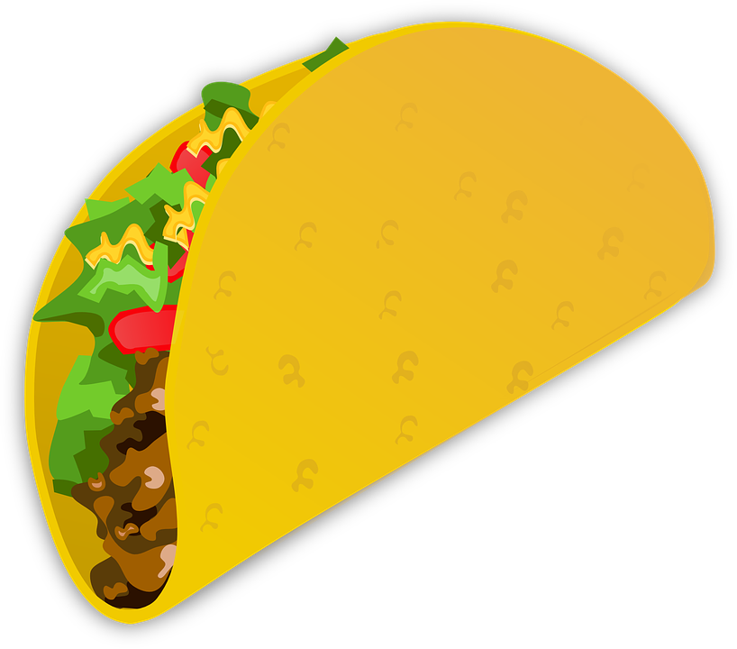

Taco Recipe

This is a quick, family recipe on how to make tacos.
Ingredients list
- 1 cup shredded cheddar cheese
- 1 cup mozzarella cheese
- 1 pound ground beef
- 3/4 cup water
- 1 packet of taco seasoning
- Some hard shell tacos
Now it's time to make it. Here's how:
- Brown the meat in a pan on the stove.
- Drain excess grease from meat.
- Add taco seasoning to meat and 3/4 cup water..
- Cook for 5 minutes.
- Warm shell(s) in microwave for 8 seconds.
- Fill shell with some meat, add cheese to preference.
- Eat.